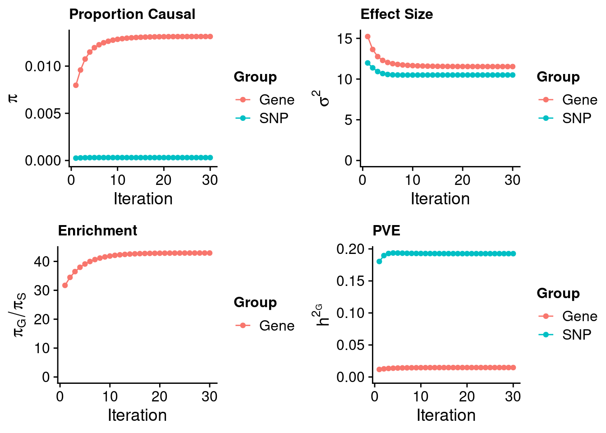
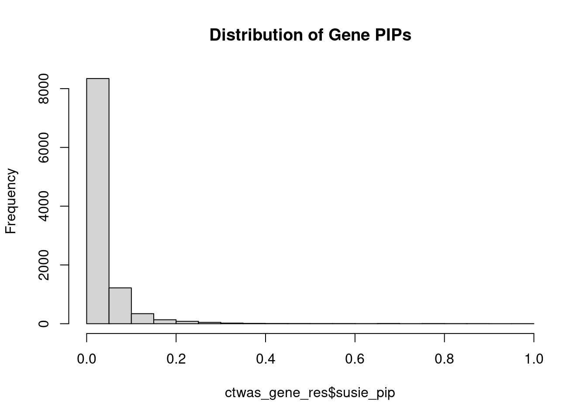
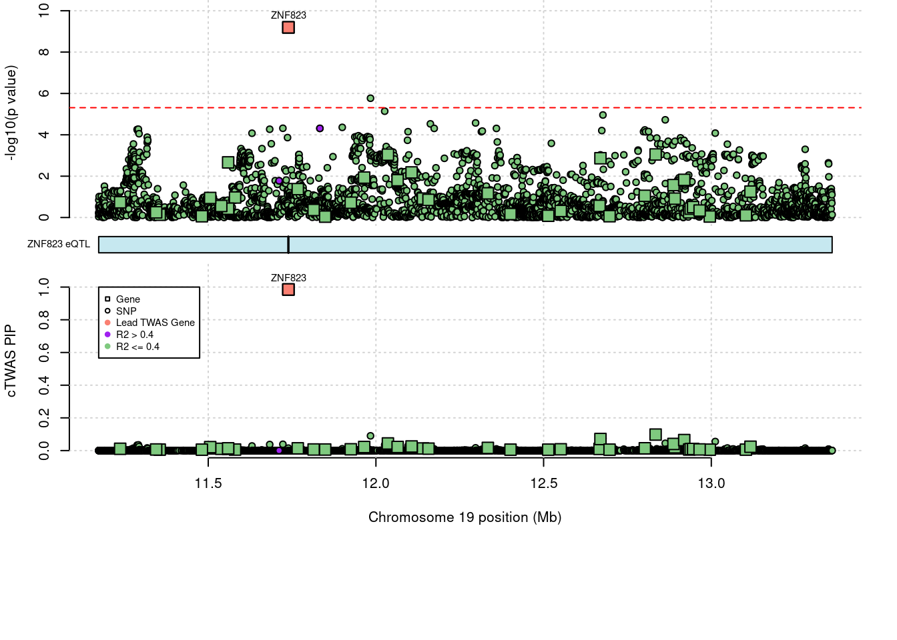
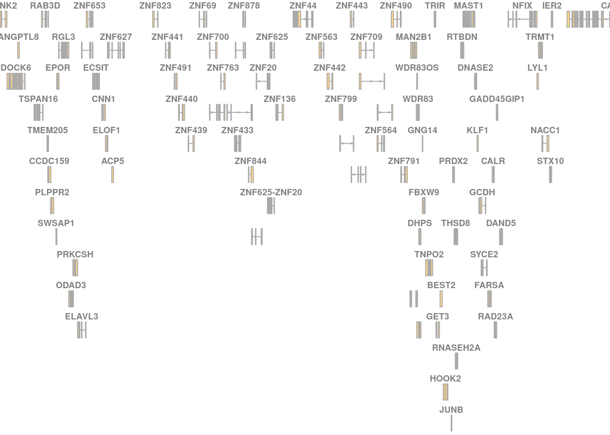

Last updated: 2022-09-03
Checks: 5 2
Knit directory: cTWAS_analysis/
This reproducible R Markdown analysis was created with workflowr (version 1.7.0). The Checks tab describes the reproducibility checks that were applied when the results were created. The Past versions tab lists the development history.
The R Markdown file has unstaged changes. To know which version of the R Markdown file created these results, you’ll want to first commit it to the Git repo. If you’re still working on the analysis, you can ignore this warning. When you’re finished, you can run wflow_publish to commit the R Markdown file and build the HTML.
Great job! The global environment was empty. Objects defined in the global environment can affect the analysis in your R Markdown file in unknown ways. For reproduciblity it’s best to always run the code in an empty environment.
The command set.seed(20211220) was run prior to running the code in the R Markdown file. Setting a seed ensures that any results that rely on randomness, e.g. subsampling or permutations, are reproducible.
Great job! Recording the operating system, R version, and package versions is critical for reproducibility.
Nice! There were no cached chunks for this analysis, so you can be confident that you successfully produced the results during this run.
Using absolute paths to the files within your workflowr project makes it difficult for you and others to run your code on a different machine. Change the absolute path(s) below to the suggested relative path(s) to make your code more reproducible.
| absolute | relative |
|---|---|
| /project2/xinhe/shengqian/cTWAS/cTWAS_analysis/data/ | data |
| /project2/xinhe/shengqian/cTWAS/cTWAS_analysis/code/ctwas_config_b37.R | code/ctwas_config_b37.R |
Great! You are using Git for version control. Tracking code development and connecting the code version to the results is critical for reproducibility.
The results in this page were generated with repository version 6a8a5fd. See the Past versions tab to see a history of the changes made to the R Markdown and HTML files.
Note that you need to be careful to ensure that all relevant files for the analysis have been committed to Git prior to generating the results (you can use wflow_publish or wflow_git_commit). workflowr only checks the R Markdown file, but you know if there are other scripts or data files that it depends on. Below is the status of the Git repository when the results were generated:
Ignored files:
Ignored: .Rhistory
Ignored: .ipynb_checkpoints/
Untracked files:
Untracked: G_list.RData
Untracked: Rplot.png
Untracked: SCZ_annotation.xlsx
Untracked: analysis/.ipynb_checkpoints/
Untracked: cache/
Untracked: code/.ipynb_checkpoints/
Untracked: code/AF_out/
Untracked: code/IBD_ME_out/
Untracked: code/LDL_S_out/
Untracked: code/SCZ_2014_EUR_ME_EUR_out/
Untracked: code/SCZ_2014_EUR_out/
Untracked: code/SCZ_2018_ME_out/
Untracked: code/SCZ_2018_S_out/
Untracked: code/SCZ_2018_out/
Untracked: code/SCZ_2020_out/
Untracked: code/SCZ_S_out/
Untracked: code/SCZ_out/
Untracked: code/T2D_out/
Untracked: code/ctwas_config_b37.R
Untracked: code/ctwas_config_b38.R
Untracked: code/mapping.R
Untracked: code/out/
Untracked: code/process_scz_2018_snps.R
Untracked: code/run_AF_analysis.sbatch
Untracked: code/run_AF_analysis.sh
Untracked: code/run_AF_ctwas_rss_LDR.R
Untracked: code/run_Autism_analysis.sbatch
Untracked: code/run_Autism_analysis.sh
Untracked: code/run_Autism_ctwas_rss_LDR.R
Untracked: code/run_BMI_analysis.sbatch
Untracked: code/run_BMI_analysis.sh
Untracked: code/run_BMI_analysis_S.sbatch
Untracked: code/run_BMI_analysis_S.sh
Untracked: code/run_BMI_ctwas_rss_LDR.R
Untracked: code/run_BMI_ctwas_rss_LDR_S.R
Untracked: code/run_Glucose_analysis.sbatch
Untracked: code/run_Glucose_analysis.sh
Untracked: code/run_Glucose_ctwas_rss_LDR.R
Untracked: code/run_IBD_analysis_ME.sbatch
Untracked: code/run_IBD_analysis_ME.sh
Untracked: code/run_IBD_ctwas_rss_LDR_ME.R
Untracked: code/run_LDL_analysis_S.sbatch
Untracked: code/run_LDL_analysis_S.sh
Untracked: code/run_LDL_ctwas_rss_LDR_S.R
Untracked: code/run_SCZ_2014_EUR_analysis.sbatch
Untracked: code/run_SCZ_2014_EUR_analysis.sh
Untracked: code/run_SCZ_2014_EUR_analysis_ME.sbatch
Untracked: code/run_SCZ_2014_EUR_analysis_ME.sh
Untracked: code/run_SCZ_2014_EUR_ctwas_rss_LDR_ME.R
Untracked: code/run_SCZ_2018_analysis.sbatch
Untracked: code/run_SCZ_2018_analysis.sh
Untracked: code/run_SCZ_2018_analysis_ME.sbatch
Untracked: code/run_SCZ_2018_analysis_ME.sh
Untracked: code/run_SCZ_2018_analysis_S.sbatch
Untracked: code/run_SCZ_2018_analysis_S.sh
Untracked: code/run_SCZ_2018_ctwas_rss_LDR.R
Untracked: code/run_SCZ_2018_ctwas_rss_LDR_ME.R
Untracked: code/run_SCZ_2018_ctwas_rss_LDR_S.R
Untracked: code/run_SCZ_2020_analysis.sbatch
Untracked: code/run_SCZ_2020_analysis.sh
Untracked: code/run_SCZ_2020_ctwas_rss_LDR.R
Untracked: code/run_SCZ_analysis.sbatch
Untracked: code/run_SCZ_analysis.sh
Untracked: code/run_SCZ_analysis_S.sbatch
Untracked: code/run_SCZ_analysis_S.sh
Untracked: code/run_SCZ_ctwas_rss_LDR.R
Untracked: code/run_SCZ_ctwas_rss_LDR_S.R
Untracked: code/run_T2D_analysis.sbatch
Untracked: code/run_T2D_analysis.sh
Untracked: code/run_T2D_ctwas_rss_LDR.R
Untracked: code/trackplot.R
Untracked: code/wflow_build.R
Untracked: code/wflow_build.sbatch
Untracked: data/.ipynb_checkpoints/
Untracked: data/FUMA_output/
Untracked: data/GO_Terms/
Untracked: data/IBD_ME/
Untracked: data/PGC3_SCZ_wave3_public.v2.tsv
Untracked: data/SCZ/
Untracked: data/SCZ_2014_EUR/
Untracked: data/SCZ_2014_EUR_ME/
Untracked: data/SCZ_2018/
Untracked: data/SCZ_2018_ME/
Untracked: data/SCZ_2018_S/
Untracked: data/SCZ_2020/
Untracked: data/SCZ_S/
Untracked: data/Supplementary Table 15 - MAGMA.xlsx
Untracked: data/Supplementary Table 20 - Prioritised Genes.xlsx
Untracked: data/T2D/
Untracked: data/UKBB/
Untracked: data/UKBB_SNPs_Info.text
Untracked: data/gene_OMIM.txt
Untracked: data/gene_pip_0.8.txt
Untracked: data/gwas_sumstats/
Untracked: data/magma.genes.out
Untracked: data/mashr_Heart_Atrial_Appendage.db
Untracked: data/mashr_sqtl/
Untracked: data/notes.txt
Untracked: data/scz_2018.RDS
Untracked: data/summary_known_genes_annotations.xlsx
Untracked: top_genes_32.txt
Untracked: top_genes_37.txt
Untracked: top_genes_43.txt
Untracked: top_genes_54.txt
Untracked: top_genes_81.txt
Untracked: z_snp_pos_SCZ.RData
Untracked: z_snp_pos_SCZ_2014_EUR.RData
Untracked: z_snp_pos_SCZ_2018.RData
Untracked: z_snp_pos_SCZ_2020.RData
Unstaged changes:
Deleted: analysis/BMI_S_results.Rmd
Modified: analysis/SCZ_test.Rmd
Note that any generated files, e.g. HTML, png, CSS, etc., are not included in this status report because it is ok for generated content to have uncommitted changes.
These are the previous versions of the repository in which changes were made to the R Markdown (analysis/SCZ_test.Rmd) and HTML (docs/SCZ_test.html) files. If you’ve configured a remote Git repository (see ?wflow_git_remote), click on the hyperlinks in the table below to view the files as they were in that past version.
| File | Version | Author | Date | Message |
|---|---|---|---|---|
| Rmd | 2b787bd | sq-96 | 2022-09-03 | update |
| html | 2b787bd | sq-96 | 2022-09-03 | update |
[1] 11502[1] 10248
1 2 3 4 5 6 7 8 9 10 11 12 13 14 15 16
1041 726 590 400 470 587 492 367 394 426 617 601 210 343 347 435
17 18 19 20 21 22
630 168 787 331 25 261 [1] 0.6857
| Version | Author | Date |
|---|---|---|
| 2b787bd | sq-96 | 2022-09-03 |
gene snp
0.0131343 0.0003062 gene snp
11.53 10.50 [1] 42.9[1] 105318[1] 10248 6309950 gene snp
0.01474 0.19261 [1] 0.2074 gene
0.07109 #distribution of PIPs
hist(ctwas_gene_res$susie_pip, xlim=c(0,1), main="Distribution of Gene PIPs")
| Version | Author | Date |
|---|---|---|
| 2b787bd | sq-96 | 2022-09-03 |
#genes with PIP>0.8 or 20 highest PIPs
head(ctwas_gene_res[order(-ctwas_gene_res$susie_pip),report_cols], max(sum(ctwas_gene_res$susie_pip>0.8), 20)) genename region_tag susie_pip mu2 PVE z num_eqtl
10276 ZNF823 19_10 0.9852 37.03 0.0003464 6.181 2
NA.3119 <NA> 6_102 0.9579 23.05 0.0002097 -4.712 2
3705 ARMC7 17_42 0.9041 22.49 0.0001931 4.486 2
385 TRIT1 1_25 0.8947 20.82 0.0001768 -4.162 3
NA.3114 <NA> 3_36 0.8837 37.45 0.0003142 -6.807 1
NA.3126 <NA> 12_33 0.8775 26.41 0.0002200 5.065 1
2928 SF3B1 2_117 0.8357 48.83 0.0003875 7.265 1
4685 RCBTB1 13_21 0.8072 21.32 0.0001634 -4.251 2
NA.3123 <NA> 9_13 0.8005 23.18 0.0001762 4.362 2
2533 VPS29 12_67 0.7991 40.26 0.0003055 -6.461 1
3013 EDEM3 1_92 0.7964 21.59 0.0001633 4.223 2
3928 SPECC1 17_16 0.7887 25.56 0.0001914 4.822 1
345 CUL3 2_132 0.7630 30.14 0.0002184 -5.730 1
5604 METTL21A 2_122 0.7628 21.45 0.0001554 -4.284 1
2583 NT5DC3 12_62 0.7438 22.58 0.0001594 -4.142 2
5543 ITPKB 1_116 0.7154 22.29 0.0001514 -4.033 2
2284 CCDC6 10_39 0.6983 21.24 0.0001408 -3.918 2
2795 PCCB 3_84 0.6976 41.45 0.0002746 -6.724 1
2200 TLE4 9_38 0.6885 21.15 0.0001382 4.279 1
NA.3017 <NA> 20_38 0.6812 21.85 0.0001413 3.659 1locus_plot_final_pub <- function(region_tag, xlim=NULL, return_table=F, focus=NULL, label_panel="TWAS", label_genes=NULL, label_pos=NULL, plot_eqtl=NULL, rerun_ctwas=F, rerun_load_only=F, legend_side="right", legend_panel="cTWAS", twas_ymax=NULL){
region_tag1 <- unlist(strsplit(region_tag, "_"))[1]
region_tag2 <- unlist(strsplit(region_tag, "_"))[2]
a <- ctwas_res[ctwas_res$region_tag==region_tag,]
regionlist <- readRDS(paste0(results_dir, "/", analysis_id, "_ctwas.regionlist.RDS"))
region <- regionlist[[as.numeric(region_tag1)]][[region_tag2]]
R_snp_info <- do.call(rbind, lapply(region$regRDS, function(x){data.table::fread(paste0(tools::file_path_sans_ext(x), ".Rvar"))}))
if (isTRUE(rerun_ctwas)){
ld_exprfs <- paste0(results_dir, "/", analysis_id, "_expr_chr", 1:22, ".expr.gz")
temp_reg <- data.frame("chr" = paste0("chr",region_tag1), "start" = region$start, "stop" = region$stop)
write.table(temp_reg,
#file= paste0(results_dir, "/", analysis_id, "_ctwas.temp.reg.txt") ,
file= "temp_reg.txt",
row.names=F, col.names=T, sep="\t", quote = F)
load(paste0(results_dir, "/", analysis_id, "_expr_z_snp.Rd"))
z_gene_temp <- z_gene[z_gene$id %in% a$id[a$type=="gene"],]
z_snp_temp <- z_snp[z_snp$id %in% R_snp_info$id,]
if (!rerun_load_only){
ctwas::ctwas_rss(z_gene_temp, z_snp_temp, ld_exprfs, ld_pgenfs = NULL,
ld_R_dir = dirname(region$regRDS)[1],
ld_regions_custom = "temp_reg.txt", thin = 1,
outputdir = ".", outname = "temp", ncore = 1, ncore.rerun = 1, prob_single = 0,
group_prior = estimated_group_prior, group_prior_var = estimated_group_prior_var,
estimate_group_prior = F, estimate_group_prior_var = F)
}
a_bkup <- a
a <- as.data.frame(data.table::fread("temp.susieIrss.txt", header = T))
rownames(z_snp_temp) <- z_snp_temp$id
z_snp_temp <- z_snp_temp[a$id[a$type=="SNP"],]
z_gene_temp <- z_gene_temp[a$id[a$type=="gene"],]
a$genename <- NA
a$gene_type <- NA
a[a$type=="gene",c("genename", "gene_type")] <- a_bkup[match(a$id[a$type=="gene"], a_bkup$id),c("genename","gene_type")]
a$z <- NA
a$z[a$type=="SNP"] <- z_snp_temp$z
a$z[a$type=="gene"] <- z_gene_temp$z
}
a_pos_bkup <- a$pos
a$pos[a$type=="gene"] <- G_list$tss[match(sapply(a$id[a$type=="gene"], function(x){unlist(strsplit(x, "[.]"))[1]}) ,G_list$ensembl_gene_id)]
a$pos[is.na(a$pos)] <- a_pos_bkup[is.na(a$pos)]
a$pos <- a$pos/1000000
if (!is.null(xlim)){
if (is.na(xlim[1])){
xlim[1] <- min(a$pos)
}
if (is.na(xlim[2])){
xlim[2] <- max(a$pos)
}
a <- a[a$pos>=xlim[1] & a$pos<=xlim[2],,drop=F]
}
if (is.null(focus)){
focus <- a$genename[a$z==max(abs(a$z)[a$type=="gene"])]
}
if (is.null(label_genes)){
label_genes <- focus
}
if (is.null(label_pos)){
label_pos <- rep(3, length(label_genes))
}
if (is.null(plot_eqtl)){
plot_eqtl <- focus
}
focus <- a$id[which(a$genename==focus)]
a$focus <- 0
a$focus <- as.numeric(a$id==focus)
a$PVALUE <- (-log(2) - pnorm(abs(a$z), lower.tail=F, log.p=T))/log(10)
R_gene <- readRDS(region$R_g_file)
R_snp_gene <- readRDS(region$R_sg_file)
R_snp <- as.matrix(Matrix::bdiag(lapply(region$regRDS, readRDS)))
rownames(R_gene) <- region$gid
colnames(R_gene) <- region$gid
rownames(R_snp_gene) <- R_snp_info$id
colnames(R_snp_gene) <- region$gid
rownames(R_snp) <- R_snp_info$id
colnames(R_snp) <- R_snp_info$id
a$r2max <- NA
a$r2max[a$type=="gene"] <- R_gene[focus,a$id[a$type=="gene"]]
a$r2max[a$type=="SNP"] <- R_snp_gene[a$id[a$type=="SNP"],focus]
r2cut <- 0.4
colorsall <- c("#7fc97f", "#beaed4", "#fdc086")
start <- min(a$pos)
end <- max(a$pos)
layout(matrix(1:4, ncol = 1), widths = 1, heights = c(1.5,0.25,1.75,0.75), respect = FALSE)
par(mar = c(0, 4.1, 0, 2.1))
if (is.null(twas_ymax)){
twas_ymax <- max(a$PVALUE)*1.1
}
plot(a$pos[a$type=="SNP"], a$PVALUE[a$type == "SNP"], pch = 21, xlab=paste0("Chromosome ", region_tag1, " position (Mb)"), frame.plot=FALSE, bg = colorsall[1], ylab = "-log10(p value)", panel.first = grid(), ylim =c(0, twas_ymax), xaxt = 'n', xlim=c(start, end))
abline(h=-log10(alpha/nrow(ctwas_gene_res)), col ="red", lty = 2)
points(a$pos[a$type=="SNP" & a$r2max > r2cut], a$PVALUE[a$type == "SNP" & a$r2max > r2cut], pch = 21, bg = "purple")
points(a$pos[a$type=="SNP" & a$focus == 1], a$PVALUE[a$type == "SNP" & a$focus == 1], pch = 21, bg = "salmon")
points(a$pos[a$type=="gene"], a$PVALUE[a$type == "gene"], pch = 22, bg = colorsall[1], cex = 2)
points(a$pos[a$type=="gene" & a$r2max > r2cut], a$PVALUE[a$type == "gene" & a$r2max > r2cut], pch = 22, bg = "purple", cex = 2)
points(a$pos[a$type=="gene" & a$focus == 1], a$PVALUE[a$type == "gene" & a$focus == 1], pch = 22, bg = "salmon", cex = 2)
if (legend_panel=="TWAS"){
x_pos <- ifelse(legend_side=="right", max(a$pos)-0.2*(max(a$pos)-min(a$pos)), min(a$pos))
legend(x_pos, y= twas_ymax*0.95, c("Gene", "SNP","Lead TWAS Gene", "R2 > 0.4", "R2 <= 0.4"), pch = c(22,21,19,19,19), col = c("black", "black", "salmon", "purple", colorsall[1]), cex=0.7, title.adj = 0)
}
if (label_panel=="TWAS" | label_panel=="both"){
for (i in 1:length(label_genes)){
text(a$pos[a$genename==label_genes[i]], a$PVALUE[a$genename==label_genes[i]], labels=label_genes[i], pos=label_pos[i], cex=0.7)
}
}
par(mar = c(0.25, 4.1, 0.25, 2.1))
plot(NA, xlim = c(start, end), ylim = c(0, length(plot_eqtl)), frame.plot = F, axes = F, xlab = NA, ylab = NA)
for (i in 1:length(plot_eqtl)){
cgene <- a$id[which(a$genename==plot_eqtl[i])]
load(paste0(results_dir, "/",analysis_id, "_expr_chr", region_tag1, ".exprqc.Rd"))
eqtls <- rownames(wgtlist[[cgene]])
eqtl_pos <- a$pos[a$id %in% eqtls]
#col="grey"
col="#c6e8f0"
rect(start, length(plot_eqtl)+1-i-0.8, end, length(plot_eqtl)+1-i-0.2, col = col, border = T, lwd = 1)
if (length(eqtl_pos)>0){
for (j in 1:length(eqtl_pos)){
segments(x0=eqtl_pos[j], x1=eqtl_pos[j], y0=length(plot_eqtl)+1-i-0.2, length(plot_eqtl)+1-i-0.8, lwd=1.5)
}
}
}
text(start, length(plot_eqtl)-(1:length(plot_eqtl))+0.5,
labels = paste0(plot_eqtl, " eQTL"), srt = 0, pos = 2, xpd = TRUE, cex=0.7)
par(mar = c(4.1, 4.1, 0, 2.1))
plot(a$pos[a$type=="SNP"], a$susie_pip[a$type == "SNP"], pch = 19, xlab=paste0("Chromosome ", region_tag1, " position (Mb)"),frame.plot=FALSE, col = "white", ylim= c(0,1.1), ylab = "cTWAS PIP", xlim = c(start, end))
grid()
points(a$pos[a$type=="SNP"], a$susie_pip[a$type == "SNP"], pch = 21, xlab="Genomic position", bg = colorsall[1])
points(a$pos[a$type=="SNP" & a$r2max > r2cut], a$susie_pip[a$type == "SNP" & a$r2max >r2cut], pch = 21, bg = "purple")
points(a$pos[a$type=="SNP" & a$focus == 1], a$susie_pip[a$type == "SNP" & a$focus == 1], pch = 21, bg = "salmon")
points(a$pos[a$type=="gene"], a$susie_pip[a$type == "gene"], pch = 22, bg = colorsall[1], cex = 2)
points(a$pos[a$type=="gene" & a$r2max > r2cut], a$susie_pip[a$type == "gene" & a$r2max > r2cut], pch = 22, bg = "purple", cex = 2)
points(a$pos[a$type=="gene" & a$focus == 1], a$susie_pip[a$type == "gene" & a$focus == 1], pch = 22, bg = "salmon", cex = 2)
if (legend_panel=="cTWAS"){
x_pos <- ifelse(legend_side=="right", max(a$pos)-0.2*(max(a$pos)-min(a$pos)), min(a$pos))
legend(x_pos, y= 1 ,c("Gene", "SNP","Lead TWAS Gene", "R2 > 0.4", "R2 <= 0.4"), pch = c(22,21,19,19,19), col = c("black", "black", "salmon", "purple", colorsall[1]), cex=0.7, title.adj = 0)
}
if (label_panel=="cTWAS" | label_panel=="both"){
for (i in 1:length(label_genes)){
text(a$pos[a$genename==label_genes[i]], a$susie_pip[a$genename==label_genes[i]], labels=label_genes[i], pos=label_pos[i], cex=0.7)
}
}
if (return_table){
return(a)
}
}
####################
library(Gviz)Loading required package: S4VectorsLoading required package: stats4Loading required package: BiocGenerics
Attaching package: 'BiocGenerics'The following objects are masked from 'package:stats':
IQR, mad, sd, var, xtabsThe following objects are masked from 'package:base':
anyDuplicated, append, as.data.frame, basename, cbind, colnames,
dirname, do.call, duplicated, eval, evalq, Filter, Find, get, grep,
grepl, intersect, is.unsorted, lapply, Map, mapply, match, mget,
order, paste, pmax, pmax.int, pmin, pmin.int, Position, rank,
rbind, Reduce, rownames, sapply, setdiff, sort, table, tapply,
union, unique, unsplit, which.max, which.min
Attaching package: 'S4Vectors'The following object is masked from 'package:base':
expand.gridLoading required package: IRangesLoading required package: GenomicRangesLoading required package: GenomeInfoDbLoading required package: gridlocus_plot_gene_track_pub <- function(a, label_pos=NULL){
chr <- unique(a$chrom)
start <- min(a$pos)*1000000
end <- max(a$pos)*1000000
biomTrack <- BiomartGeneRegionTrack(chromosome = chr,
start = start,
end = end,
name = "ENSEMBL",
biomart = ensembl,
filters=list(biotype="protein_coding"))
biomTrack <- as(biomTrack, "GeneRegionTrack")
biomTrack <- biomTrack[biomTrack@range@elementMetadata@listData$feature %in% c("protein_coding", "utr3", "utr5")]
if (isTRUE(label_pos=="above")){
displayPars(biomTrack)$just.group <- "above"
}
grid.newpage()
plotTracks(biomTrack, collapseTranscripts = "meta", transcriptAnnotation = "symbol", from=start, to=end, panel.only=T, add=F)
}a <- locus_plot_final_pub(region_tag="19_10", return_table=T,
focus="ZNF823",
label_genes=c("ZNF823"),
label_pos=c(3,3),
label_panel="both",
plot_eqtl=c("ZNF823"),
legend_side="left",
legend_panel="cTWAS")
| Version | Author | Date |
|---|---|---|
| 2b787bd | sq-96 | 2022-09-03 |
locus_plot_gene_track_pub(a, label_pos="above")
sessionInfo()R version 4.1.0 (2021-05-18)
Platform: x86_64-pc-linux-gnu (64-bit)
Running under: Scientific Linux 7.4 (Nitrogen)
Matrix products: default
BLAS/LAPACK: /software/openblas-0.3.13-el7-x86_64/lib/libopenblas_haswellp-r0.3.13.so
locale:
[1] LC_CTYPE=en_US.UTF-8 LC_NUMERIC=C
[3] LC_TIME=en_US.UTF-8 LC_COLLATE=en_US.UTF-8
[5] LC_MONETARY=en_US.UTF-8 LC_MESSAGES=en_US.UTF-8
[7] LC_PAPER=en_US.UTF-8 LC_NAME=C
[9] LC_ADDRESS=C LC_TELEPHONE=C
[11] LC_MEASUREMENT=en_US.UTF-8 LC_IDENTIFICATION=C
attached base packages:
[1] grid stats4 stats graphics grDevices utils datasets
[8] methods base
other attached packages:
[1] Gviz_1.38.4 GenomicRanges_1.46.0 GenomeInfoDb_1.26.7
[4] IRanges_2.24.1 S4Vectors_0.28.1 BiocGenerics_0.40.0
[7] biomaRt_2.50.0 cowplot_1.1.1 ggplot2_3.3.6
[10] workflowr_1.7.0
loaded via a namespace (and not attached):
[1] colorspace_2.0-3 rjson_0.2.20
[3] ellipsis_0.3.2 rprojroot_2.0.3
[5] htmlTable_2.2.1 biovizBase_1.42.0
[7] XVector_0.34.0 base64enc_0.1-3
[9] fs_1.5.2 dichromat_2.0-0.1
[11] rstudioapi_0.13 farver_2.1.0
[13] bit64_4.0.5 AnnotationDbi_1.56.1
[15] fansi_1.0.3 xml2_1.3.2
[17] splines_4.1.0 cachem_1.0.6
[19] knitr_1.33 Formula_1.2-4
[21] jsonlite_1.8.0 Rsamtools_2.10.0
[23] cluster_2.1.2 dbplyr_2.1.1
[25] png_0.1-7 compiler_4.1.0
[27] httr_1.4.3 backports_1.2.1
[29] lazyeval_0.2.2 assertthat_0.2.1
[31] Matrix_1.3-3 fastmap_1.1.0
[33] cli_3.3.0 later_1.2.0
[35] htmltools_0.5.3 prettyunits_1.1.1
[37] tools_4.1.0 gtable_0.3.0
[39] glue_1.6.2 GenomeInfoDbData_1.2.7
[41] dplyr_1.0.9 rappdirs_0.3.3
[43] Rcpp_1.0.9 Biobase_2.54.0
[45] jquerylib_0.1.4 vctrs_0.4.1
[47] Biostrings_2.62.0 rtracklayer_1.54.0
[49] xfun_0.24 stringr_1.4.0
[51] ps_1.7.0 lifecycle_1.0.1
[53] ensembldb_2.18.4 restfulr_0.0.13
[55] XML_3.99-0.6 getPass_0.2-2
[57] zlibbioc_1.40.0 scales_1.2.0
[59] BSgenome_1.62.0 VariantAnnotation_1.40.0
[61] ProtGenerics_1.26.0 hms_1.1.1
[63] promises_1.2.0.1 MatrixGenerics_1.6.0
[65] parallel_4.1.0 SummarizedExperiment_1.24.0
[67] AnnotationFilter_1.18.0 RColorBrewer_1.1-3
[69] yaml_2.2.1 curl_4.3.2
[71] gridExtra_2.3 memoise_2.0.1
[73] sass_0.4.0 rpart_4.1-15
[75] latticeExtra_0.6-29 stringi_1.7.6
[77] RSQLite_2.2.14 highr_0.9
[79] BiocIO_1.4.0 checkmate_2.0.0
[81] GenomicFeatures_1.46.1 filelock_1.0.2
[83] BiocParallel_1.28.0 rlang_1.0.4
[85] pkgconfig_2.0.3 bitops_1.0-7
[87] matrixStats_0.62.0 evaluate_0.15
[89] lattice_0.20-44 purrr_0.3.4
[91] htmlwidgets_1.5.3 GenomicAlignments_1.30.0
[93] labeling_0.4.2 bit_4.0.4
[95] processx_3.5.3 tidyselect_1.1.2
[97] magrittr_2.0.3 R6_2.5.1
[99] generics_0.1.2 Hmisc_4.5-0
[101] DelayedArray_0.20.0 DBI_1.1.2
[103] foreign_0.8-81 pillar_1.7.0
[105] whisker_0.4 withr_2.5.0
[107] nnet_7.3-16 survival_3.2-11
[109] KEGGREST_1.34.0 RCurl_1.98-1.6
[111] tibble_3.1.7 crayon_1.5.1
[113] utf8_1.2.2 BiocFileCache_2.2.0
[115] rmarkdown_2.9 jpeg_0.1-8.1
[117] progress_1.2.2 data.table_1.14.2
[119] blob_1.2.3 callr_3.7.0
[121] git2r_0.28.0 digest_0.6.29
[123] httpuv_1.6.1 munsell_0.5.0
[125] bslib_0.4.0